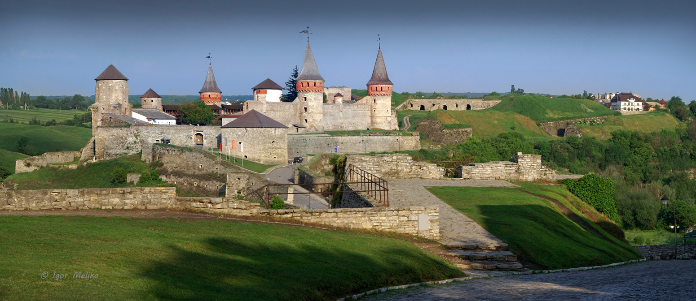
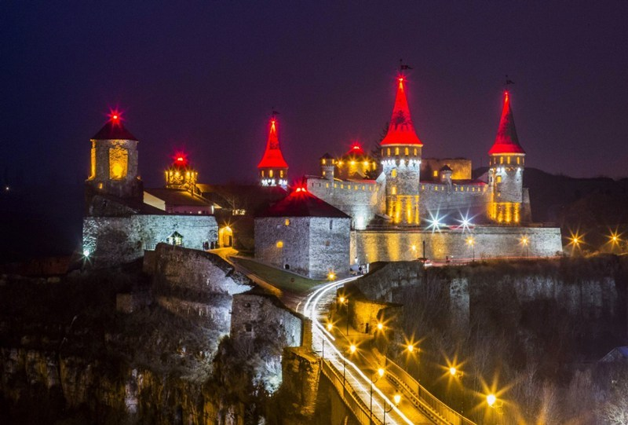

До складу Кам’янецької фортеці входять одинадцять башт, кожна з яких має свою назву й історію.Так, найвища башта названа Папською тому, що була збудована на кошти, надіслані Папою Римським Юлієм II. Ще її називають Кармелюковою, бо в ній тричі був ув’язнений український народний герой Устим Кармелюк.  У Чорній (кутовій) башті знаходиться криниця завглибшки 40 м і діаметром 5 м, видовбана у скелі.
У Чорній (кутовій) башті знаходиться криниця завглибшки 40 м і діаметром 5 м, видовбана у скелі.
У підземеллях Замкового комплексу відкрито експозиції, що відтворюють сторінки його історії. У західному бастіоні реконструйовано панораму оборони замку 1672 р. під частурецької навали. У східному бастіоні розміщено експозицію, присвячену історії легкої метальної зброї на Поділлі, де відвідувач може вистрілити з арбалета, відчувши себе середньовічним воїном. До нашого часу збереглася система ходів і казематів.
Могутність укріплень Кам'янця-Подільського вражала мандрівників. А її обороноздатність та вдале місце розташування приваблювало турецьких загарбників, литовських князів і польську шляхту. У всі часи Кам'янець-Подільська фортеця була неприступною твердинею. Кажуть, що у 1621 році, коли хан Осман з військом підійшов до міста, його вразили міцні стіни і башти фортеці. Він спитав у своїх підданих, хто збудував це диво.  Ті йому відповіли: «Аллах». Тоді Осман вигукнув: «Нехай Аллах і бере її», – і відступив. За всю свою історію місто-фортеця було захоплене двічі. У 1393 році фортецю захопив литовський князь Вітовт, а у 1672 році, завдяки великій чисельності війська, містом заволоділи турки.
Кам’янець-Подільська фортеця складається з двох частин.Перша частина – це Стара фортеця, що являє собою одинадцять башт, розташованих у формі неправильного чотирикутника і сполучених за периметром кріпосними стінами. Фортеця має частково відкритий підземний хід, який, згідно з давнім переказом, вів до Хотинської фортеці, що знаходиться в 30 кілометрах.
У дворі Старої фортеці знаходиться цікавий об’єкт – боргова яма з муляжем боржника, яка викликає неабиякий інтерес у багатьох туристів. В цю яму колись спускали неплатників податків, а зараз туристи кидають монетки.
Друга частина фортеці була збудована пізніше, у XVII столітті, і предсавляла собою бастіонну систему з додатковими оборонними спорудами. Нова фортеця прикривала стару частину споруди з боку поля. Укріпленнями слугували високі земляні вали, зміцнені двома напівбастіонами висотою 16 метрів, і оточені глибоким ровом. Всередині валів розташовувалися приміщення військового призначення – казарми і склади. Рів і вали були облицьовані каменем. Ця фортеця стала невразливою для ворожої артилерії. Але Нова фортеця збереглася набагато гірше Старої, що імовірно пов’язано з помилкою при проектуванні (її висота перевищувала висоту Старої фортеці, тому її частково розібрали).